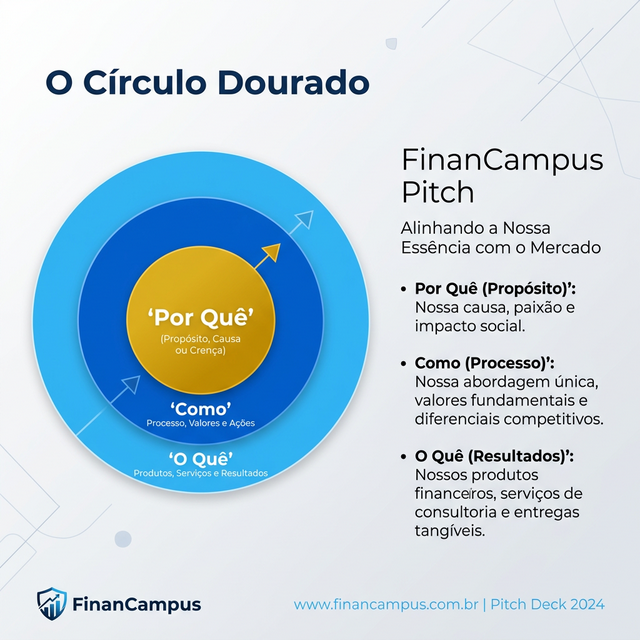

Estudo de Caso 15 — Pitching, PPTX e Demonstrações ao Vivo
Objetivo da Semana
Desenvolver uma apresentação executiva para investidores e bancas técnicas focada num roteiro sedutor com contorno de Storytelling de sua Persona. Adicionalmente, realizar os ensaios técnicos do espelhamento do Banco e do App Live.
Passo a Passo da Atividade
O "Golden Circle": inicie pelo "Por quê?" e finalize pelas tecnologias implementadas. Recrie o documento detalhando em no máximo dez slides essa ponte com sua Persona de meses atrás.
Exemplo de Prompt: "Ajude-me a estruturar um Pitch (roteiro de apresentação) de exatos 5 minutos para a avaliação final do meu app. O roteiro deve envolver a banca com o problema focado na nossa persona, mostrar a solução, listar 3 diferenciais..."
Transfira esses sumários para o Canva. Utilize as mesmíssimas paletas de Identidade Visual feitas na Semana 8. É preciso que as margens e a letra dialoguem com a cor dominante e o acento.
Faça os 3 fluxos sistêmicos de maior valor que o aplicativo se propõe (ex: Login, Comprar/Doar/Consultar, Gerar Aviso). Para evitar desastres como um blackout de internet ao vivo, peça ao celular gravar a tela durante o teste para ter "planos B" valiosos na banca.
Para concluir as atividades desta semana, reúna todas as informações e artefatos gerados nos passos anteriores e preencha o template oficial de entrega. Faça uma cópia do documento para a sua conta Google e compartilhe-o com o professor.
Acessar Template: Roteiro e Guiagem de Apresentação Final (Pitch)
📱 Estudo de Caso: FinanCampus
Veja como o grupo do FinanCampus estruturou o pitch e a demos.

Abertura com storytelling: "Conheçam a Mariana... No início do mês ela tem dinheiro. No final, não sabe para onde foi. Ela não é descuidada — ela só não tem a ferramenta certa. Nós criamos o FinanCampus para a Mariana."
Roteiro da demo ao vivo (4 minutos):
- Mostrar o app já aberto na tela Home com dados pré-cadastrados de Mariana.
- Registrar uma nova transação: R$ 45,00 em Alimentação, tipo Despesa, data de hoje.
- Mostrar a atualização automática do saldo no Home.
- Abrir o gráfico de pizza mostrando Alimentação como maior gasto.
- Mostrar a notificação de orçamento disparada.
- Abrir o Firebase ao vivo e mostrar o documento inserido na coleção.
Slides: 7 slides (Capa, Problema, Solução, Demo, Arquitetura, Requisitos Atendidos, Próximos Passos). Fundo escuro com o azul #2D6AF6 como cor principal.
Vídeo de backup: gravado em 3 minutos, salvo no Google Drive do grupo e disponível offline no celular do Bruno.